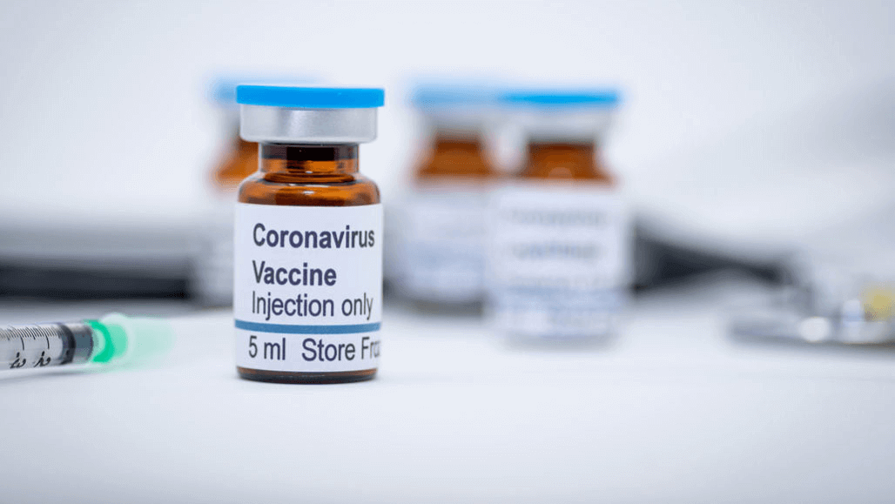

The Ethics Behind the COVID-19 Vaccine in the Development Stage
Ashley Lee. 7/9/2020

With various vaccines being developed, ethical concerns arise in communities. (Manjurul/iStock/Getty Images Plus)
With various vaccines being developed, ethical concerns arise in communities. (Manjurul/iStock/Getty Images Plus)
As governments, private companies, and research centers across the world race to find the most effective vaccine for COVID-19, it is inevitable for ethical concerns to arise amongst many scientists and communities. While many are focusing on finding a fair method of distribution, others are concerned about the ethics behind vaccine development.
In April, a group of Catholic leaders in the U.S. and Canada, along with other anti-abortion groups expressed opposition to COVID-19 vaccines that are being developed with cells from human fetuses aborted decades ago, according to Science News. In order to express their concern regarding this issue, the group wrote a letter to the commissioner of the U.S. Food and Drug Administration (FDA), Stephen Hahn.
“It is critically important that Americans have access to a vaccine that is produced ethically: no American should be forced to choose between being vaccinated against this potentially deadly virus and violating his or her conscience,” members of the U.S. Conference of Catholic Bishops and other anti-abortion groups said in a letter to Hahn. “Thankfully, other [COVID-19] vaccines … utilize cell lines not connected to unethical procedures and methods.”
Along with many other points, the group also raised concerns about the vaccines involving these cell lines that were selected for Operation Warp Speed, a U.S. government partnership that hopes to deliver 300 million doses of an effective COVID-19 vaccine by January 2021. They also asked the U.S. government to incentivize firms creating vaccines without relying on fetal cells.
However, not everyone agreed with the views of the anti-abortion groups presented in their letter. “Is ideological purity adequate to justify the thousands or even millions of #COVID19 deaths that could be prevented by a safe and effective vaccine? How is that a "pro-life" standpoint?” virologist of Columbia University Angela Rasmussen said on Twitter post in response to the letter.
Rasmussen continued by explaining how the alternative suggested in the letter violated ethical concerns of their own, as they used HeLa cells (which will be further explained down below).
Cell Lines in Vaccine Research and Development
Cell lines are populations of human or animal cells that can be grown for prolonged periods of time. Due to chromosomal abnormalities or mutations, such as tumors, immortalized cell lines never stop dividing. Because of this function, they serve an important role in helping scientists with biomedical research on topics such as diabetes, hypertension and developing vaccines.
HEK-293, the particular cell line opposed by Catholic leaders, is derived from an electively aborted human embryo in 1973. Through the use of this cell line, many vaccines including rubella, hepatitis A and chickenpox have been developed over the years.
HeLa cells were named after Henrietta Lacks, an African American woman diagnosed with cervical cancer in 1951. While receiving treatment from Johns Hopkins University, a sample from her cervix was used for research without her consent. Scientists soon realized that her cancer cells could divide indefinitely. This cell line has been used in developing vaccines, including the vaccine for polio and human papilloma virus (HPV).
HEK-293 and HeLa cells are two examples of immortalized cell lines used by some companies to develop COVID-19 vaccines.
While some vaccines can be created without using live cells, others require live cells for the vaccine to be produced.
Many vaccines, including the influenza vaccine, are grown in nonhuman cell lines, such as those from chicken eggs. However, when working with a new virus, human cell lines are useful because scientists do not have enough information on how the virus replicates, viral immunologist at North Carolina State University in Raleigh Matthew Koci explained.
One out of the many purposes cell lines serve is to weaken the virus so it can be used in vaccines. For example, if the virus grew in a human cell line at a lower temperature than the normal body temperature, the virus adapts to grow more efficiently at this lower temperature. However, when it is injected into humans as a vaccine, the virus can no longer replicate at the same efficiency in normal body temperature. Although the vaccine still causes an immune response, it cannot replicate itself quickly enough to cause the illness.
Because of the role human cell lines play in creating a vaccine, immortal cell lines can be useful, as the speed in which it replicates makes it difficult for these cell lines to die and provides a large enough supply of potential vaccines.
Furthermore, some immortalized cell lines may also come with specific roles and benefits. For example, HeLa cells are especially useful when analyzing how the coronavirus enters the cells and impacts the body.
On the other hand, because HEK 293 cells express many adenoviral genes, these cells play a role in propagating adenoviral vectors. Adenoviral vectors are used to deliver the virus to the cell, a safer alternative to the virus entering the cell on its own and delivering genes. Additionally, researchers have discovered that HEK-293 cells pump out viral protein in response to the injection of viral genes, a crucial ingredient in helping people develop an immune response.
Ethical Concerns of HEK-293 and HeLa
Some anti-abortion groups are opposed to using fetal cell lines in the development of a vaccine, as some view these vaccines as a product derived from abortion.
In the case of HeLa cells, the ethical problems began when the cells were used for experimentation amongst scientists without consent.
“She wasn’t aware, and her family wasn’t aware,” bioethicist at Howard University in Washington, D.C. Yolanda Wilson said. “The use of this Black woman’s body has … contributed to a kind of cultural memory of mistrusting health institutions among Black folks. It’s a larger narrative of disrespecting Black patients, using Black people and Black bodies in experiments.”
Rasmussen explains how these immortal cell lines cannot be avoided in the development of vaccines because, at the very least, research gained from these cell lines will be implemented into the creation of new vaccines. But she also believes scientists need to think about the materials they use and why.
In response to the ethical considerations violated with the use of HeLa cells, Wilson believes there should be an effort to make sure the Black community will be provided with an adequate amount of vaccines, especially due to the disproportionate effects of the virus among Black people in the U.S.